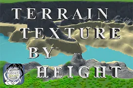

Terrain Texture by Height Tool
Unity Asset ToolPaint Unity terrains with a few clicks
Paints on a Unity terrain based on the terrain layers you set and the desired height you want for each layer of your choice. Unity Terrain is painted with just a few easy clicks in the inspector. Additionally, this can be achieved at runtime. The Terrain Texture By Height Tool makes it easy to paint your design on your unity terrain or add some cool paint effects at runtime. It comes with grass, pre-made Unity Terrain, six pre-made Unity Terrain layers, torch with flame particle effect and flame lighting, rain system, and flood system.
Videos
Screenshots

Demo

Buy Now